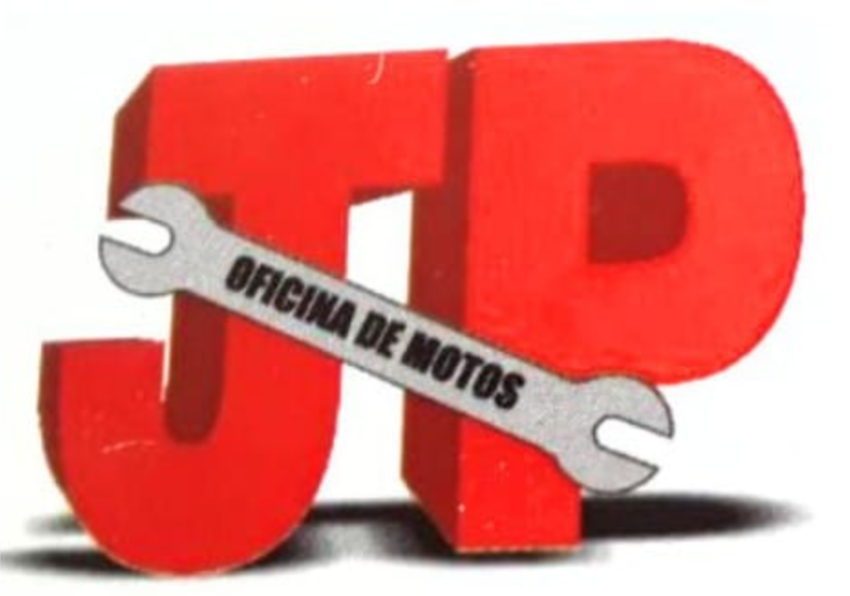
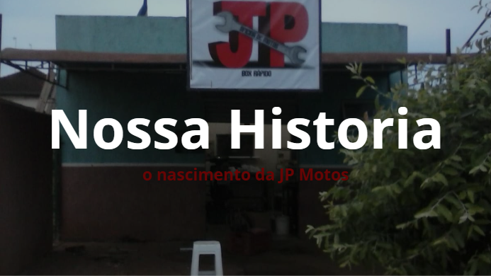

Em 2007 Paulo Souza entrou em uma oficina como limpador de motos, mas logo impressionou a todos seus colegas com sua experiência com motos e se um tornou mecanico em pouco tempo. Em 2012 Paulo decidiu sair da oficina e abrir seu proprio negocio, uma pequena oficina de motos chamada JP Motos nome dado em homenagem a sua filha Luana Jamile e ao seu filho Pedro Gabriel, com muito esforço e dicação Paulo conseguiu abrir a JP Motos em 22 de Maio de 2012 em Dourados-MS. Com o passar do tempo a oficina foi crescendo e ganhando clientes fieis pelo seu preço justo e serviço de qualidade. Hoje a JP Motos é uma oficina conhecida na cidade de Dourados-ms crescendo a cada dia e ano que passa.